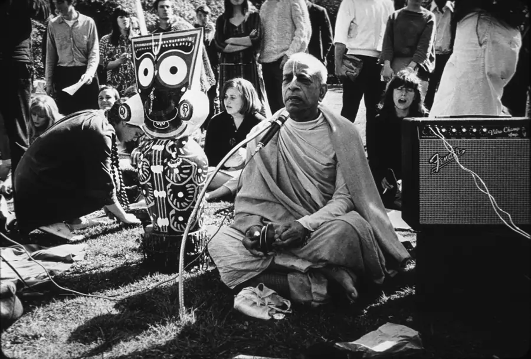

Vapu his form

Golden Gate Park, San Francisco, February 1967.
Photograph: Bhaktivedanta Swami with Jagannath in Golden Gate Park, February 1967, Mukunda Goswami, CC BY-SA 3.0 via Wikimedia Commons

Vāṇī his words
Śrīla Prabhupāda's Vani Temple
Vanipedia: the essence of Vedic knowledge
Enter VanipediaVapu his form
Red Square, Moscow, 1971.
Photograph: Prabhupada in Moscow 1971, Samuel Speerstra aka Syamasundara Das, CC BY-SA 3.0 via Wikimedia Commons
Vāṇī his words
Vaniquotes
“Samadhi is not an artificial bodily state…”
Vapuhis formVāṇīhis words
Vapu his form

Morning walk, Germany, 1974.
Photograph: Prabhupada on a morning walk in Germany 1974, Christian Jansen, CC BY 3.0 via Wikimedia Commons

Vāṇī his words
Vanimedia
Audio, video and images.
Nectar Drop: lecture, Hamburg, 5 September 1969
Vapu his form

Singing, Germany, 1974.
Photograph: Prabhupada singing (Germany 1974), Christian Jansen, CC BY 3.0 via Wikimedia Commons
.jpg){kind=link}
Vāṇī his words
The four petals
-
Vanipedia
The encyclopedia of Śrīla Prabhupāda's words.
Enter Vanipedia -
Vanisource
His books, lectures, conversations and letters.
Open Vanisource -
Vaniquotes
His words gathered by theme.
Open Vaniquotes -
Vanimedia
Audio, video and images.
Open Vanimedia